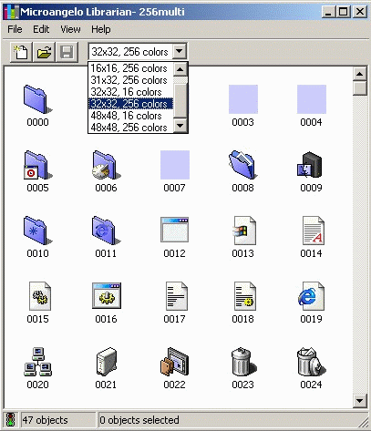
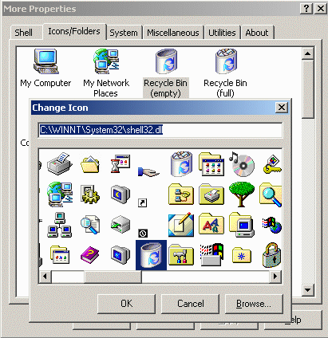

Icon Editing and Management Programs
Top
Please note that although the following programs have much more powerful icon editing and library
manipulation features than Icon Library, the main reason Icon Library exists is to provide a large
collection of sorted icons to the user. I have not tried to compete with these product's powerful
features. It is quite practical to use some of these products in conjunction with the Icon Library
collection.
- Microangelo from ImpactSoft
contains several utilities including an icon editor and icon library manager.
Microangelo Studio is a graphics editor that can manipulate images in all sizes and color
formats. A full-featured tool set includes a graphic selection tool, pencil, multiple brush
sizes, color erasers, flood, rectangle, and ellipse drawing tools. Intelligent paint modifiers
can apply color gradients, dodge and burn existing colors, and anti-alias drawing operations
against the graphics below. Complete clipboard support to cut, copy, and even scale paste
operations. Studio can import and scale bitmap images with awesome results. An actual size
viewing area offers a "real time" display of the edit session as you work. Perhaps one of the
best features of all, a powerful undo/redo manager allows you to step through many changes of
thousands of pixels, encouraging creative experimentation.
Microangelo Librarian is a powerful utility for viewing and managing icon libraries of all
types. Use it to seek out all icon sizes and color formats. Librarian displays full-window
viewing of every icon image in any standard icon file type. Drag 'n' drop icons between
Librarian windows or double-click any icon to instantly edit it using Microangelo's Studio
component. Easily extract embedded icons to ICO files - just drag and drop them into any
Windows folder.

- IconForge from Cursorarts
can create or change icons, cursors, animated cursors and icon libraries for Windows. It is
optimized for editing small images, you will find a full set of painting tools at your
disposal. You can import from and export to a variety of other image, icon and animation
types, so you can take advantage of work which you've already created or scanned from other
sources. IconForge is also an excellent tool for other graphics, such as producing
bookmark/favorites icons for a web site, repeating tiles for wallpaper backgrounds, animated
GIF bullets to make listings stand out, or cursors for various projects.
IconForge also has built-in library functions allowing you to assemble and edit collections
of icons in Icon ICO and Cursor Library CUL formats. Library files make it easy
to organize your icon images, save disk space, and include with programming projects. You can
even create your own EXE programs for your icon and cursor libraries, complete with
Setup and Viewer utilities, which you can distribute or sell to others.
- IconWorkshop from Axialis
is a powerful tool designed to Create, Extract, Convert, Manage and Redistribute Windows Icons. It
has a fully integrated workspace that permits you to work efficiently and create professional icons
in minutes. It is also able to read Macintosh Icons and convert them to the Windows format. IconWorkshop
supports ICL and can create, load and save Icon Libraries. It imports and exports Adobe Photoshop
PSD images with layers, PNG and BMP with smooth transparency alpha channel. It can
automatically create a multi-format icon from an image in one click. The icon editor contains several
icon image filters such as blur, smooth, sharpen, details, contour and emboss. It also contains several
icon image adjustments such as hue, saturation, brightness and contrast, as well as several icon image
tools, resize, rotation at any angle and flip. Visit the
IconWorkshop website to read about
the many other features contained in this program suite.
- ArtIcons from Aha-Soft
is an advanced icon-specific utility for Windows. It allows professional and amateur graphic artists
alike to create and edit icon images and manage icon files and libraries. With ArtIcons you can create
and edit icons in either standard or custom sizes, in color depths up to 16 million colors. You can
open and edit BMP, JPEG and PNG images in sizes up to 127x127 pixels, paste
images in various graphic formats ICO, BMP, JPEG, ANI, CUR, WMF and PNG directly into
icons, Export icon images to ICO, BMP, JPEG and PNG files. Articons can extract icons
from Windows executables EXE, icon libraries ICL and animated cursor ANI files.
It can extract icons from all files in selected folders and subfolders and save them as icon libraries,
and also modify icons inside executables. The icon editor has many tools including gradient and chess
fill, drop shadow, grayscale, colorize, rotate, roll and mirror effects. It can modify icons inside
executables and other program file.
The icon manager can create and manage icon libraries for better and more efficient icon storage,
delete identical icons in libraries, drag and drop icons between different libraries, and customize
Windows Desktop and folder icons.
Image Editing Programs
Top
- PhotoShop from Adobe
is the professional image-editing standard helping you produce the highest quality images for print,
the Web, and anywhere else. It is the best choice for editing extracted icons that have been saved
as BMP images. Photoshop has far too many features and abilities to be described here. Visit
the website for more information. There are also thousands of web sites providing hints and add-on
filters for Photoshop. Use the keyword Photoshop in
Yahoo.com or
Google.com
for a huge list of relevant sites.
- Paintshop Pro from Jasc Software is an
excellent second choice after Photoshop as an image editor. Paintshop Pro has two main advantages
over Photoshop. It is much cheaper and it is quicker to learn because it does not have such a vast
array of features, many of which are not very useful for creating simple images based on icons. On
the other hand, Paintshop Pro does have a good selection of painting, drawing, text and image editing
tools, and like Photoshop, it uses image layers which is a particularly useful feature when merging
multiple icons, saved as BMP format images, into a single picture. Paintshop Pro also has
a huge web following and there are many sites dedicated to this program. Once again, using the
keyword Paintshop, try searching in
Yahoo.com or
Google.com
for many relavent sites.
- LView Pro created by Leonardo Loureiro is a
full-featured Image Processor that eliminates the need to purchase and learn how to use many separate
single-purpose applications. Some of the editors included in LView Pro are an image editor, image file
browser, slide show viewer, contact sheet builder and web gallery builder. In conjunction with Icon
Library, Lview is particularly useful as a screen capture device, for cropping and resizing images,
adjusting brightness, contrast and color, and converting from BMP to many other image
formats. Using the keyword LView, try searching in
Yahoo.com or
Google.com
for many sites dedicated to LView Pro.
Desktop Manipulation Programs
Top
- More Properties by Imaginary Software has
the ability to change a huge number of parameters on your system, including several icon related ones.
- It can specify whether to display small or large desktop icons. If you choose large icons,
Windows will try to use 48x48 icons if they are available, otherwise it creates fairly ugly
magnifications of the standard 32x32 icons.
- It can change the horizontal and vertical spacing of icons.
- Most importantly, it has the ability to change dozens of standard icon images on the desktop.

- TweakUI is a utility by Microsoft that allows you to adjust many aspects of your
Windows User Interface including a few options related to icons. It can specify which icons are
visible on the desktop, and whether the shortcut arrow is visible. It also the ability to "repair" your
Windows Explorer icons by rebuilding all Explorer icons and removing any unused ones from memory. This
is useful if you find that Explorer is displaying the wrong icon for a program or shortcut. This program
does not have as many icon related options as More Properties mentioned previously, but it does have its
uses, especially for non-icon related tweaking.
Final Note
Top
I have not tried to mention every icon manipulation and graphic editing program available today.
There are just too many! If you are not happy with my selections, I suggest that you perform a
search of the Internet where you will find many more similar programs. If you find some that
stand out from the rest particularly well, feel free to send email to
steve@iconlibrary.com mentioning what you found and
why I should include it in this list. Please note that this
is not an invitation for every
other program author to request free advertising in this section. Most likely I will ignore
all such requests. But if something really stands out, please let me know. Thanks.